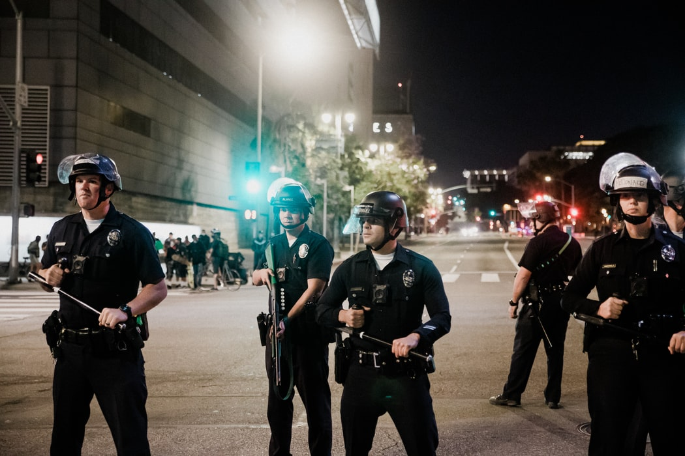

Opinions

Source: Sean Lee. #PeacefulProtests. 2020. Unsplash.com (https://unsplash.com/photos/SzDGA5btDwY)
1. I believe that the core message of A.C.A.B. is still centered around pointing out that people within corrupt police systems are complacent with the brutality that goes unpunished. Corrupt authority is common in many countries, which often leads to corrupt, unjust and outright cruel law enforcement within those places. If a system isn’t called out for its unjust ways, it will likely escalate. Therefore, I agree with the message that the acronym displays.
2. Defunding the police isn’t the best idea as a short-term solution, as we currently don’t have any other response system in place. Rather, funding needs to be heavily reviewed. I believe that education on ways to resolve a conflict quickly and painlessly should be more prioritized than constant access to multiple kinds of weapons that are intended for long-term harm. Essentially, don’t defund the service fully - rather, reflect where the money needs to be placed.
3. I expect for there to be more protests and more public unrest in the coming time, as of June 2020.
1. ACAB = system is corrupted. The amount of racism cops + the system tolerated it obvious that its corrupted. When you have one bad cop or one bad police station the problem will spread the only way to fix the system is to completely redo it so that the new system better prevents corruption.
2. ^^^ same reasons + minneapolis police department spent a bunch of money on different programs but look where that got them. Also the police funds are over the roof, are you really going to argue that you’d rather fund middle aged baby men with lethal weapons rather than public education systems?
3. Change policing system, transferring of funds to places that ACTUALLY need them, cops who have done obvious injustices should be tried immediately not just after a bunch of protests fire corrupt cops ie: ones that covered up their badges + those who started tear gassing during peaceful profiteers + all those who were caught on video participating in police brutality + punish cops who stood by while their colleague was obviously harming innocents.
1. I am currently with and in support of the statement “ACAB”. I agree with this is the saying that police as their job is to be bad in some sense and not as a person themselves. The person isn’t bad but their job almost obligates them to act a certain way and some cops abuse their “power or authority”.
2. I personally don’t agree with defunding of police. The reason for this is because of the future. Yes, our cops are currently not doing the best they can and should but how does defunding them make anything better? I get that their funding comes from OUR TAX money and we aren’t getting the service that we feel is appropriate but defunding then would leave them with less police or no provincial police. We would then rely on RCMP and I’m skeptical on the idea of RCMP taking care of such a large and populous city like Toronto. Even if we defunded police, in the future, I doubt that crime rates will lower and there’s still criminals in the city and its a cops job to take care of those issues. Defunding police won’t help with crime rates. Although, I understand the idea that defunding the police as a form of protest and showing that you want them to do a better job, I would be in support of further training for police. As researched, it’s shown that police training in my perspective. Seems too short of a time or there is an inadequate amount of training done. Thus, I am not in support of defunding the police but rather I would want further or better training for police qualifications.
3. Changes I would expect to happen after this is as mentioned in my statement on the question about ‘Defunding Police’ for one, would be better police training and police understanding of communities and equality. I would expect that society as a whole by now should have realized how lucky some of us are based on our race and how inequality based on race tampers with judgement and treatment. I expect that people should take this as a learning point to acknowledge the injustice and inequalities that are within our society and for this to stop. This treatment has been going on far too long even after so many examples and cases of black people being prejudiced and robbed of their freedom and rights because of race. Moving forwards, I expect that equality should be a standard no matter what race your are.
1. I think that ACAB is a generalization of police, thus not entirely true. There are definitely cops that are right minded, as can be shown in numerous clips on social media. It is not fair to associate the actions of some misguided people with all of the other men and women that are just like you.
2. I believe that police defunding is a plausible idea to control the power of the police force. Spreading the funds of the police to other aspects of society would not only ease criminal activity, but make life easier in general.
3. Changes I want to see is government action. I want to see our legislators, our governors, and congress recognize the faults of the country and take action to appease the protests and compromise before things get even more out of hand then they already are. Citizens can be seen nationwide advocating for equal rights, and it's time for their voices to be heard.
1. I’m with ACAB because I believe that the system is unjust, racist and the people that work to keep the system going are part of the problem. The first law enforcement was first created to help catch runaway slaves and although the goal for the police has now changed to protect and serve “everyone”, it doesn’t change that the base of the system was built on racism. Furthermore, cops choose to put on their uniform and go to work every day to help the system go on. Some might say that’s it’s unfair to label ALL cops as bastards but the few amounts of cops that do decide to speak up against the corrupt system they work for and stand with the protestors don’t make up for the entire system that is actively working against people of color, especially African-Americans. People don’t realize that you don’t have to murder someone to be a bad cop. Simply just not speaking up against your coworker/fellow cop that has done something wrong will make you a “bastard”. The police are designed to protect and serve the wealthy white people in power. Now, here’s where the question of black police may come in, why would they actively continue to help the system that is working against them? This is because they’re choosing to put their financial wellbeing and stability over their black struggle. Black cops are free of the risk that black people without a badge carry.
2. I believe in reallocating some of the funds from the police to the more impoverished communities to help better schools, hospitals, housing, and food. The cops are supposed to protect and serve yet many POC don’t feel protected at all. Cops use their power for themselves and others in power, and instead of overfunding the police, that money can be used to help make communities safer and to help better the lives of the people in those communities. The disparity in the number of unarmed black civilians to the number of unarmed white civilians killed by police is incredible. It’s time to take that money out of the corrupt departments and to put it somewhere else. Source for the disparity in the unarmed black civlians.
3. I want people to no longer be killed for the color of their skin. I don’t want them to feel unsafe because of something they cannot control. Police need to be better trained to respond to those in a mental health crisis, we must teach them to prevent misconduct while also understanding and appreciating the communities they serve. Chokeholds, no-knock warrants need to be banned. Cops need to learn to step in to stop and de-escalate situations. I know change will not come immediately and I will wait for it, but I want the change to start happening now. Source.
1. I support acab 100%. acab stands for all cops are bastards, the bastard part being taken from the word bastardize which means to corrupt/debase. Cops are corrupt by supporting a corrupt system. By still being a cop, they’re supporting a corrupt system. All cops are corrupt. All cops are bastards.
2. I somewhat support defunding the police. I don't think it’s necessarily right in some ways. I think rather than defunding, we should be attempting to reinforce the morals and ethics that go into being a part of the police force and reforming the whole police system.
3. I think the start of changing this is to reform the police system itself. That is the core of blm and why people are raising this problem to the public. I expect black people themselves to educate the police force on this and reinforce the morals and values that go into being part of the police force (said in question 2).
1. I’m not with nor against ACAB since I believe that being the job of a cop is very similar to someone who would serve the country in the army. Orders are what they should follow and leaving a job or so, isn’t so simple. What I do believe is that the media we see mainly covers the brutal and explicit sides of cops, which ACAB should stand for. I also believe that many cops who take on their job do take it on adequately, hence to my choice to join neither side but try to understand both parties who are with or against.
2. I do not believe in defunding the police. As said in the answer before, it cannot have been the doing of all and every cop that takes this job and defunding the police may inflict a hefty change to the service system. An alternative could be something that may be simpler to use, such as acting upon media responses and reports and checking on the team of cops they are cooperating with.
3. I expect the government and police forces (supposedly?) to investigate into cases which the media have spoken against loudly. If thousands of people worldwide are able to hear about such brutal cases, why are they ignored? Mayhaps speak up about cases that thousands, even millions, wonder about. Racism is not easy to get rid of. I would want judges and people part of the court to not have a racist mindset; I would want any person to not have a racist mindset. That idea would take years to achieve; it has already been over a century of racist views. I expect the generation to grow on that mistake and make sure racism does not continue into the further future, as it should have never been an idea in the first place.
1. I am completely with acab. I have several reasons to stand by acab, such as cops abusing their power against others and it has been showing a lot recently. They have been harming peaceful protesters who haven’t done anything wrong or illegal yet treat them in violent matters. All that the protesters are doing is try to make a change that should’ve been made decades ago yet they’re getting harmed, even when kids or minors are there.
2. I believe in defunding the police. We could do better not funding the police as much as we do. Things that we could improve if we defund police are education systems and care for the mentally/physically ill.
3. I really want racism to change. People of colour should not be judged for their skin colour. Most people need to get that into their head. Asians aren’t a virus, hispanic or latinx people aren’t illegal immigrants, black people aren’t thugs, and native americans aren’t savages. Without poc colonizers probably wouldn’t have even survived. They should have thanked the native americans for helping them but instead they harmed them and put their lives at stake. I also expect that cops get more training beforehand. I don’t think they get enough training to have a job that other lives depend and rely on for ‘safety’.